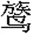
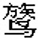

——“学匪”派考古学之一
古之儒者不作兴谈女人，但有时总喜欢谈到女人。例如“缠足”罢，从明朝到清朝的带些考据气息的著作中，往往有一篇关于这事起源的迟早的文章。为什么要考究这样下等事呢，现在不说他也罢，总而言之，是可以分为两大派的，一派说起源早，一派说起源迟。说早的一派，看他的语气，是赞成缠足的，事情愈古愈好，所以他一定要考出连孟子的母亲，也是小脚妇人的证据来。说迟的一派却相反，他不大恭维缠足，据说，至早，亦不过起于宋朝的末年。
其实，宋末，也可以算得古的了。不过不缠之足，样子却还要古，学者应该“贵古而贱今”，斥缠足者，爱古也。但也有先怀了反对缠足的成见，假造证据的，例如前明才子杨升庵先生，他甚至于替汉朝人做《杂事秘辛》[182]，来证明那时的脚是“底平趾敛”。
于是又有人将这用作缠足起源之古的材料，说既然“趾敛”，可见是缠的了。但这是自甘于低能之谈，这里不加评论。
照我的意见来说，则以上两大派的话，是都错，也都对的。现在是古董出现的多了，我们不但能看见汉唐的图画，也可以看到晋唐古坟里发掘出来的泥人儿。那些东西上所表现的女人的脚上，有圆头履，有方头履，可见是不缠足的。古人比今人聪明，她决不至于缠小脚而穿大鞋子，里面塞些棉花，使自己走得一步一拐。
但是，汉朝就确已有一种“利屣”[183]，头是尖尖的，平常大约未必穿罢，舞的时候，却非此不可。不但走着爽利，“潭腿”[184]似的踢开去之际，也不至于为裙子所碍，甚至于踢下裙子来。那时太太们固然也未始不舞，但舞的究以倡女为多，所以倡伎就大抵穿着“利屣”，穿得久了，也免不了要“趾敛”的。然而伎女的装束，是闺秀们的大成至圣先师，这在现在还是如此，常穿利屣，即等于现在之穿高跟皮鞋，可以俨然居炎汉[185]“摩登女郎”之列，于是乎虽是名门淑女，脚尖也就不免尖了起来。先是倡伎尖，后是摩登女郎尖，再后是大家闺秀尖，最后才是“小家碧玉”[186]一齐尖。待到这些“碧玉”们成了祖母时，就入于利屣制度统一脚坛的时代了。
当民国初年，“不佞”观光北京的时候，听人说，北京女人看男人是否漂亮（自按：盖即今之所谓“摩登”也）的时候，是从脚起，上看到头的。所以男人的鞋袜，也得留心，脚样更不消说，当然要弄得齐齐整整，这就是天下之所以有“包脚布”的原因。仓颉造字，我们是知道的，谁造这布的呢，却还没有研究出。但至少是“古已有之”，唐朝张

作的《朝野佥载》[187]罢，他说武后朝有一位某男士，将脚裹得窄窄的，人们见了都发笑。可见盛唐之世，就已有了这一种玩意儿，不过还不是很极端，或者还没有很普及。然而好像终于普及了。由宋至清，绵绵不绝，民元革命以后，革了与否，我不知道，因为我是专攻考“古”学的。然而奇怪得很，不知道怎的（自按：此处似略失学者态度），女士们之对于脚，尖还不够，并且勒令它“小”起来了，最高模范，还竟至于以三寸为度。这么一来，可以不必兼买利屣和方头履两种，从经济的观点来看，是不算坏的，可是从卫生的观点来看，却未免有些“过火”，换一句话，就是“走了极端”了。
我中华民族虽然常常的自命为爱“中庸”，行“中庸”的人民，其实是颇不免于过激的。譬如对于敌人罢，有时是压服不够，还要“除恶务尽”，杀掉不够，还要“食肉寝皮”[188]。但有时候，却又谦虚到“侵略者要进来，让他们进来。也许他们会杀了十万中国人。不要紧，中国人有的是，我们再有人上去”。这真教人会猜不出是真痴还是假呆。而女人的脚尤其是一个铁证，不小则已，小则必求其三寸，宁可走不成路，摆摆摇摇。慨自辫子肃清以后，缠足本已一同解放的了，老新党的母亲们，鉴于自己在皮鞋里塞棉花之麻烦，一时也确给她的女儿留了天足。然而我们中华民族是究竟有些“极端”的，不多久，老病复发，有些女士们已在别想花样，用一枝细黑柱子将脚跟支起，叫它离开地球。她到底非要她的脚变把戏不可。由过去以测将来，则四朝（假如仍旧有朝代的话）之后，全国女人的脚趾都和小腿成一直线，是可以有八九成把握的。
然则圣人为什么大呼“中庸”呢？曰：这正因为大家并不中庸的缘故。人必有所缺，这才想起他所需。穷教员养不活老婆了，于是觉到女子自食其力说之合理，并且附带地向男女平权论点头；富翁胖到要发哮喘病了，才去打高而富球，从此主张运动的紧要。我们平时，是决不记得自己有一个头，或一个肚子，应该加以优待的，然而一旦头痛肚泻，这才记起了他们，并且大有休息要紧，饮食小心的议论。倘有谁听了这些议论之后，便贸贸然决定这议论者为卫生家，可就失之十丈，差以亿里了。
倒相反，他是不卫生家，议论卫生，正是他向来的不卫生的结果的表现。孔子曰，“不得中行而与之，必也狂狷乎，狂者进取，狷者有所不为也！”[189]以孔子交游之广，事实上没法子只好寻狂狷相与，这便是他在理想上之所以哼着“中庸，中庸”的原因。
以上的推定假使没有错，那么，我们就可以进而推定孔子晚年，是生了胃病的了。“割不正不食”，这是他老先生的古板规矩，但“食不厌精，脍不厌细”的条令却有些稀奇。他并非百万富翁或能收许多版税的文学家，想不至于这么奢侈的，除了只为卫生，意在容易消化之外，别无解法。况且“不撤姜食”[190]，又简直是省不掉暖胃药了。何必如此独厚于胃，念念不忘呢？曰，以其有胃病之故也。
倘说：坐在家里，不大走动的人们很容易生胃病，孔子周游列国[191]，运动王公，该可以不生病证的了。那就是犯了知今而不知古的错误。盖当时花旗白面[192]，尚未输入，土磨麦粉，多含灰沙，所以分量较今面为重；国道尚未修成，泥路甚多凹凸，孔子如果肯走，那是不大要紧的，而不幸他偏有一车两马。胃里袋着沉重的面食，坐在车子里走着七高八低的道路，一颠一顿，一掀一坠，胃就被坠得大起来，消化力随之减少，时时作痛；每餐非吃“生姜”不可了。所以那病的名目，该是“胃扩张”；那时候，则是“晚年”，约在周敬王十年以后。
以上的推定，虽然简略，却都是“读书得间”的成功。但若急于近功，妄加猜测，即很容易陷于“多疑”的谬误。例如罢，二月十四日《申报》载南京专电云：“中执委会令各级党部及人民团体制‘忠孝仁爱信义和平’[193]匾额，悬挂礼堂中央，以资启迪。”看了之后，切不可便推定为各要人讥大家为“忘八”[194]；三月一日《大晚报》[195]载新闻云：“孙总理夫人宋庆龄女士自归国寓沪后，关于政治方面，不闻不问，惟对社会团体之组织非常热心。据本报记者所得报告，前日有人由邮政局致宋女士之索诈信□（自按：原缺）件，业经本市当局派驻邮局检查处检查员查获，当将索诈信截留，转辗呈报市府。”看了之后，也切不可便推定虽为总理夫人宋女士的信件，也常在邮局被当局派员所检查。
盖虽“学匪派考古学”，亦当不离于“学”，而以“考古”为限的。
三月四日夜。
注 释
[181] 本篇最初发表于1933年3月16日《论语》第十三期，署名何干。
“学匪” 是1925年北京女师大风潮中一些人攻击鲁迅、马裕藻等进步教员的用语，参看本卷第254页注〔10〕。鲁迅在《华盖集续编·学界三魂》中曾说：“学界的打官话是始于去年，凡反对章士钊的都得了‘土匪’，‘学匪’，‘学棍’的称号”；“但这也足见去年学界之糟了，竟破天荒的有了学匪。”
[182] 《杂事秘辛》 笔记小说，一卷，旧题无名氏撰，伪托为东汉佚书，实为明代杨慎作。写东汉桓帝（刘志）选梁莹为妃的故事。其中有一段描写梁莹的脚：“足长八寸， 跗丰研，底平指敛，约缣迫袜，收束微如禁中。”杨慎在该书跋语中说：“予尝搜考弓足原始，不得。及见‘约缣迫袜，收束微如禁中’语，则缠足后汉已自有之。”杨是持缠足起源较早一说的。杨慎（1488—1554），字用修，号升庵，四川新都人，明代学者，正德进士，曾任翰林学士。
跗丰研，底平指敛，约缣迫袜，收束微如禁中。”杨慎在该书跋语中说：“予尝搜考弓足原始，不得。及见‘约缣迫袜，收束微如禁中’语，则缠足后汉已自有之。”杨是持缠足起源较早一说的。杨慎（1488—1554），字用修，号升庵，四川新都人，明代学者，正德进士，曾任翰林学士。
[183] “利屣” 一种舞鞋。《史记·货殖列传》：“今夫赵女郑姬，设形容，揳鸣琴，揄长袂，蹑利屣，目挑心招。”
[184] “潭腿” 拳术的一种，相传由清代山东龙潭寺的和尚创立，故称。
[185] 炎汉 即汉代。过去阴阳家用金木水火土五行（也称五德）相生相克的循环变化来说明王朝更替；他们认为汉朝属火，故称“炎汉”。
[186] “小家碧玉” 语出南朝乐府《碧玉歌》：“碧玉小家女，不敢攀贵德”。碧玉原系人名，旧时常以“小家碧玉”称小康人家的少女。
[187] 《朝野佥载》 唐代张

作，内容系记载唐代的故事和琐闻。按该书没有鲁迅所引一事的记载。张（约658—约730），字文成，深州陆泽（今河北深州）人，唐代文学家。调露进士，曾官监察御史、司门员外郎等职。[188] “除恶务尽” 语出《尚书·泰誓》：“树德欲滋，除恶务本。”“食肉寝皮”，语出《左传》襄公二十一年：“然二子者，譬如禽兽，臣食其肉而寝处其皮矣。”
[189] 语出《论语·子路》。据宋代朱熹注：“行，道也。狂者，志极高而行不掩。狷者，知未及而守有余。”
[190] “割不正不食”、“食不厌精，脍不厌细”、“不撤姜食”等语，都见《论语·乡党》。
[191] 孔子周游列国 孔子于鲁定公十二年至鲁哀公十一年（前498—前484）离开鲁国，周游宋、卫、陈、蔡、齐、楚等国，游说诸侯，终不见用。
[192] 花旗白面 由美国进口的面粉。“花旗”是我国民间对美国国旗的俗称，也指称美国。
[193] “忠孝仁爱信义和平” 当时国民党政要戴季陶等宣扬的所谓“八德”。国民党当局于1933年2月13日下令各级党部及机关团体将它制匾悬挂于礼堂中央；国民党政府教育部又于同月20日宣布以此为“小学公民训练标准”。
[194] “忘八” 封建时代流行的俗语，指忘记了概括封建道德要义的“孝、悌、忠、信、礼、义、廉、耻”八个字的最后一个“耻”字，也即“无耻”的意思。
[195] 《大晚报》 1932年2月12日在上海创刊，张竹平创办，后为国民党财阀孔祥熙收买，1949年5月25日停刊。